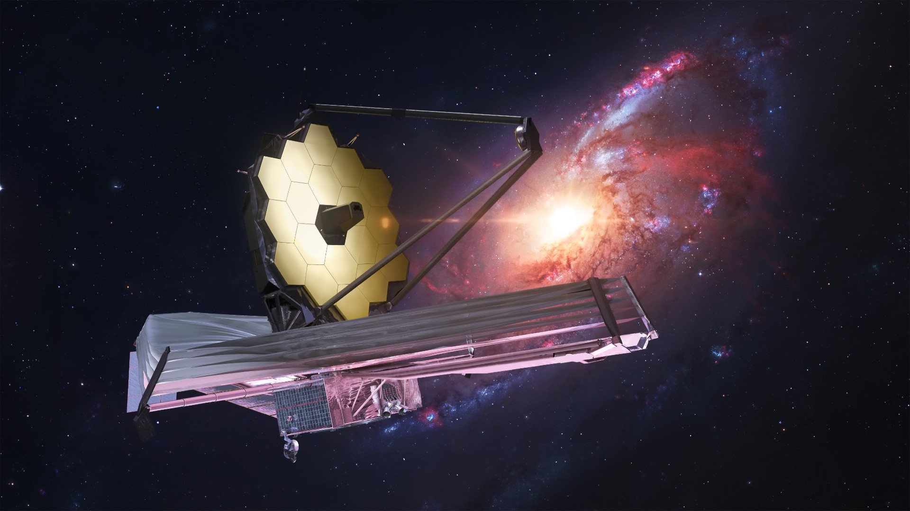

Astronomical instrumentation involves building high-technology cameras and other instruments that are used with large telescopes.
Telescopes focus the light, and the instruments turn that light into data that scientists can make sense of. Learning about the universe requires the right tools, so developing instrumentation is an essential part of astronomical research.
Here, you'll journey into the world of collecting and managing light from outer space. Starting with an overview of telescopes and cameras, we'll guide you through the basics of how these instruments work. With the help of Python, you'll then dig into a real image from the JWST, getting hands-on experience in analyzing space-captured data.
This workshop also sheds light on the challenges engineers tackle to make space-based light collection efficient and cost-effective while optimizing instruments for the best possible result. Get ready to explore the practical side of astronomical technology and its critical role in unraveling the universe's mysteries.
